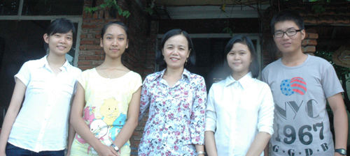

Một lớp có 5 em học sinh đỗ thủ khoa đại học

Lần cập nhật cuối lúc Thứ sáu, 26 Tháng 9 2014 08:12 Viết bởi Administrator Thứ bảy, 30 Tháng 8 2014 07:07
Thầy giáo Nguyễn Tấn Ái và cô giáo Nguyễn Thị Bích Hiền dạy môn Văn Trường THPT chuyên Nguyễn Bỉnh Khiêm cho biết, tại kỳ thi đại học năm nay, lớp 12/5 chuyên Văn của trường “bội thu” khi có 5 em đậu thủ khoa. Đó là các em Đoàn Thị Huệ đỗ thủ khoa khối C, Học viện Hành chính quốc gia TP.Hồ Chí Minh với 24 điểm; Đỗ Nguyễn Tường Linh đỗ thủ khoa xét tuyển Đại học Đà Nẵng (dựa vào kết quả 3 năm học THPT); Nguyễn Tưởng Tố Uyên, thủ khoa Khoa Luật Đại học Huế với 22 điểm; Hồ Tú Ẩn, Nguyễn Thị Minh Uyên thủ khoa Khoa Công nghệ thông tin Trường Đại học Quảng Nam 21 điểm. Ngoài ra còn có em Nguyễn Như Thảo là á khoa khối C Đại học Huế với 25 điểm.

Cô giáo chủ nhiệm Nguyễn Thị Bích Hiền và các em học sinh đỗ thủ khoa. Ảnh: H.T.P
Trường THPT chuyên Nguyễn Bỉnh Khiêm gần như kỳ thi đại học năm nào cũng có thủ khoa, song năm nay lớp chuyên Văn có đến 5 thủ khoa và 1 á khoaitnbk.edu.vnh hiếm có. Trước ngày lên đường vào đại học, em Đỗ Nguyễn Tường Linh chia sẻ, ngày biết tin không lọt vào đội tuyển của tỉnh tham gia kỳ thi học sinh giỏi quốc gia, cô trò đã ôm nhau khóc không biết bao nhiêu lần. “Mỗi đứa chúng em thầm nhủ lòng mình sẽ đền đáp bằng việc nỗ lực hết mình cho kỳ thi đại học sắp tới. Và thật sự là chúng em đã làm được khi hầu hết đều đậu đại học, thậm chí là đậu với số điểm rất cao, một vài bạn còn trở thành thủ khoa của các trường” - Tường Linh nói. Theo cô Hiền, hiện nay rất nhiều thầy cô giáo dạy Văn trăn trở trước xu thế của thời đại, môn Văn thực ra mà nói không phải là môn học “hot” trong nhà trường. Đa số các em đi theo những môn học tự nhiên nên việc giảng dạy môn Văn trong nhà trường không phải không có trở ngại từ phía học sinh. Vì vậy, việc có nhiều em đỗ đại học điểm cao và đạt thủ khoa khiến cho cô và các đồng nghiệp thấy niềm vui như nhân lên gấp bội. Đây cũng là niềm tin cho nhà trường, các thầy cô giáo và học sinh để có được thành tích tốt trong những năm đến.
HUỲNH TRƯƠNG PHÁTitnbk.edu.vn.com.vn)
- 26/01/2015 16:59 - Bộ trưởng Bộ GĐ-ĐT chốt 10 điểm về kỳ thi quốc gia
- 11/11/2014 07:22 - Ra quân dọn vệ sinh hưởng ứng ngày Đô thị Việt Nam
- 18/10/2014 07:08 - Sáng tạo trẻ chuyên Nguyễn Bỉnh Khiêm
- 25/09/2014 00:00 - Những người trẻ mê thiên văn học
- 15/09/2014 08:52 - Trao giải 5 đề tài đạt giải cuộc thi sáng tạo than…
- itnbk.edu.vn
- 01/04/2014 15:52 - Bộ GD&ĐT vừa công bố lịch thi tốt nghiệp THPT năm …
- 28/03/2014 09:52 - Tam Kỳ - Phú Ninh tổ chức hội thi Khi tôi 18
- 12/02/2014 16:21 - Kỳ thi học sinh giỏi quốc gia năm học 2013 - 2014 …
- 06/02/2014 22:18 - Kỳ tích Võ Quang Hưng
- 25/01/2014 22:14 - Bí thư Tỉnh ủy Nguyễn Đức Hải chúc mừng trường THP…